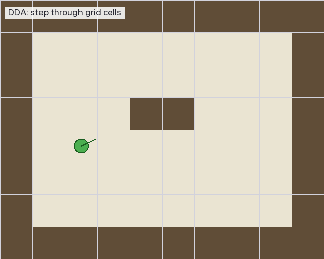

🏠 ホーム › 04. DDA アルゴリズム
04. DDA — 格子を効率よく渡る
このページは何？
光線が壁を見つけるまで、地図をどう進むかを解説するページ です。
言葉の解説
- DDA = Digital Differential Analyzer（デジタル微分解析機）
- 格子 (grid) = マップの マスの縦横の線。1 マスごとに引かれる
- 格子線 (grid line) = マスとマスの 境界線
DDA は 「格子線の場所だけチェックして進む」 賢い方法。 ピクセル単位で進むより 爆速です。
💡 ここでつまずく人へ — 「格子線」って何？
マップは 1 マス単位 で書かれた地図です（チェック柄の床をイメージ）。 マス同士の境目に走っている 縦と横の線 が「格子線」。
DDA は「光線が 1 マス 1 マス進むのではなく、次の格子線にぶつかった瞬間 だけを チェックする」方法。0.01 単位で進むより圧倒的に速いです。
1. なぜ DDA を使う？
素朴な方法（遅い）: 1 ピクセルずつ進む
flowchart LR
A[現在位置] --> B[0.01 進む]
B --> C{壁?}
C -- No --> B
C -- Yes --> D[到着]
style A fill:#E3F2FD
style D fill:#FFCDD2これだと 1 本の光線で数百回のチェック が必要。 1024 本 × 数百回 = 数十万回 のチェックが 1 フレームで発生 → 重すぎる。
DDA の方法（速い）: 格子線ごとにジャンプ
flowchart LR
A[現在位置] --> B[次の格子線まで<br>一気にジャンプ]
B --> C{壁?}
C -- No --> B
C -- Yes --> D[到着]
style A fill:#E3F2FD
style D fill:#C8E6C9壁の境界だけ見れば十分 なので、 マップ 8x8 なら 最大 15 回くらい のチェックで終わります。
2. DDA の 1 回の動き
🎬 DDA の動きを可視化

プレイヤー（緑の丸）から光線が飛び、1 マスずつオレンジ色でハイライト しながら進みます。 壁のマス（濃い茶色）に当たった瞬間、赤色でハイライトして終了 します。
仕組み
「X の次の格子線」と「Y の次の格子線」のうち近い方に進む を繰り返すだけ。
flowchart LR
Start([開始]) --> CalcX[X の次の<br>格子線まで] --> CalcY[Y の次の<br>格子線まで] --> Compare{どちらが<br>近い?}
Compare -->|X| StepX[X 方向<br>1 マス進む<br>side = 0] --> Check{壁 '1' ?}
Compare -->|Y| StepY[Y 方向<br>1 マス進む<br>side = 1] --> Check
Check -->|Yes| End([終了<br>距離を返す])
Check -->|No| Compare
style Start fill:#E3F2FD
style End fill:#C8E6C9
style Check fill:#FFF9C43. 具体例: プレイヤーが (1.5, 1.5) から右方向に光線を飛ばす
座標の見方
- x 座標 = 横方向（左→右で増える）
- y 座標 = 縦方向（上→下で増える）
- 例:
(1.5, 1.5)= 列 1, 行 1 のマスの中央
初期のマップ
| 列 (x) → 行 (y) ↓ |
0 | 1 | 2 | 3 | 4 |
|---|---|---|---|---|---|
| 0 | 🧱 | 🧱 | 🧱 | 🧱 | 🧱 |
| 1 | 🧱 | 👤 | ⬜ | ⬜ | 🧱 |
| 2 | 🧱 | ⬜ | ⬜ | ⬜ | 🧱 |
| 3 | 🧱 | ⬜ | ⬜ | ⬜ | 🧱 |
| 4 | 🧱 | 🧱 | 🧱 | 🧱 | 🧱 |
👤 = プレイヤー（右上向き: dir ≈ (1, 0.3)）／ 🧱 = 壁／ ⬜ = 通路
DDA の動き（1 ステップずつ）
| 回数 | side | 進む方向 | 移動後のマス | 壁？ |
|---|---|---|---|---|
| 1 回目 | 0 (X 壁) |
右へ 1 マス | (2, 1) | ❌ 通路 |
| 2 回目 | 1 (Y 壁) |
下へ 1 マス | (2, 2) | ❌ 通路 |
| 3 回目 | 0 (X 壁) |
右へ 1 マス | (3, 2) | ❌ 通路 |
| 4 回目 | 0 (X 壁) |
右へ 1 マス | (4, 2) | ✅ 壁発見! |
たった 4 回 のチェックで壁に到達！
到達時のマップ
| 列 (x) → 行 (y) ↓ |
0 | 1 | 2 | 3 | 4 |
|---|---|---|---|---|---|
| 0 | 🧱 | 🧱 | 🧱 | 🧱 | 🧱 |
| 1 | 🧱 | 👤→ | → | ⬜ | 🧱 |
| 2 | 🧱 | ⬜ | ↘ | → | 🟥 |
| 3 | 🧱 | ⬜ | ⬜ | ⬜ | 🧱 |
| 4 | 🧱 | 🧱 | 🧱 | 🧱 | 🧱 |
🟥 = 光線が最後に当たった壁（マス (4, 2)）
4. 使う変数まとめ
| 変数 | 意味 | 型 |
|---|---|---|
ray.map_pos.x |
今いるマスの x 座標（列） | int |
ray.map_pos.y |
今いるマスの y 座標（行） | int |
ray.delta_dist.x |
X 方向に 1 マス進むのに必要な光線の長さ | double |
ray.delta_dist.y |
Y 方向に 1 マス進むのに必要な光線の長さ | double |
ray.side_dist.x |
次の X 格子線までの距離 | double |
ray.side_dist.y |
次の Y 格子線までの距離 | double |
ray.step.x |
X 方向に進む向き（+1 or -1） | int |
ray.step.y |
Y 方向に進む向き（+1 or -1） | int |
ray.side |
最後に渡った格子線（0 = X 壁, 1 = Y 壁） | int |
5. なぜ「どちらが近いか」で判定？
次の X 格子線 と Y 格子線 のうち、光線が先に届く方 が次の通過地点です。
flowchart LR
Now[現在位置] -->|距離 0.5| NextX[次の X 格子線]
Now -->|距離 1.2| NextY[次の Y 格子線]
NextX -->|0.5 < 1.2| Pick[X 格子線を通過]
style Now fill:#E3F2FD
style Pick fill:#C8E6C9光線は 直線 なので、先に出会う格子線を 1 本ずつ越えていくイメージ。
6. コード解説
最初の格子線までの距離を計算
DDA 本体
7. ディフェンスで聞かれること
| 質問 | 答え方 |
|---|---|
| DDA とは？ | 格子を 1 マスずつ効率的に渡るアルゴリズム |
| なぜピクセル単位で進まない？ | 遅いから。格子の境界だけ見れば十分 |
| side が 0 / 1 の違いは？ | 0 = X 壁（東西）、1 = Y 壁（南北） |
| 無限ループ対策は？ | マップ外に出たら break、必ず 1 マスずつ前進 |
| X と Y どちらに進む判断は？ | side_dist.x と side_dist.y のうち小さい方 |
8. よくあるミス
div by zero（0 で割るバグ）
dir.x == 0 のとき 1/dir.x で落ちる。
delta_dist 計算時に 1e30 の大きな値でガード必須。
壁判定の順番
DDA ループは 「進む → 壁判定」 の順。 逆にすると 1 マスずれる。
side の混同
side = 0 は X 格子線を渡った = 東西の壁（EA/WE）。
南北 (NO/SO) ではないので注意。
📚 分からない用語は？
→ 📚 用語集
9. 次のページへ
DDA で壁は見つけられました。次は 光線の向き を決める仕組みを学びます。
▶️ 05. カメラと魚眼補正